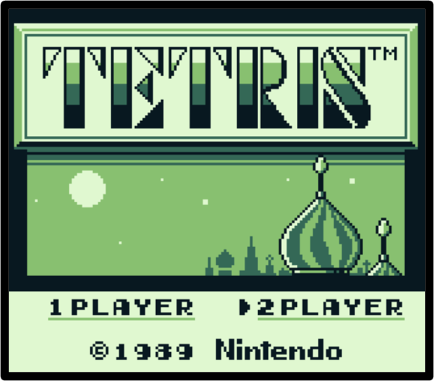
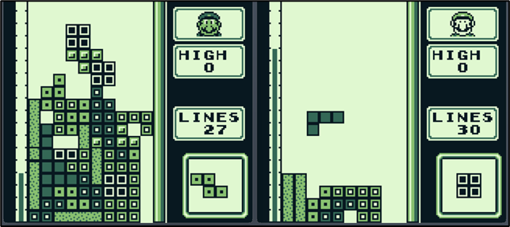
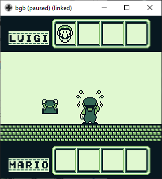
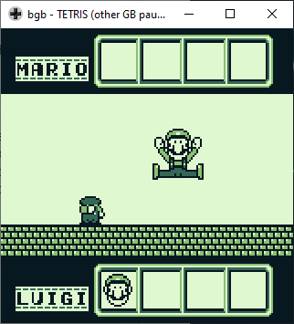
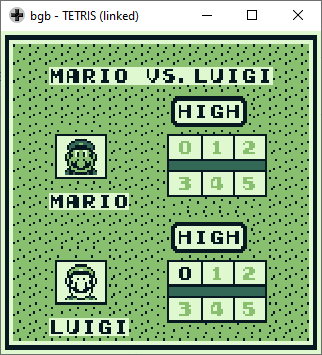
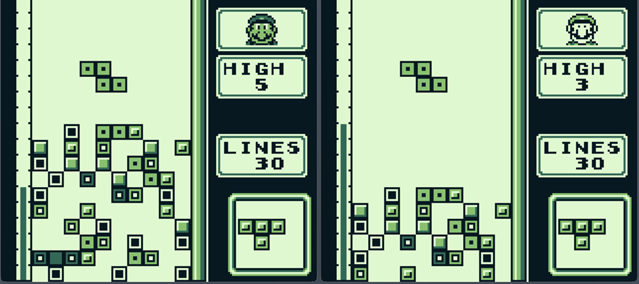
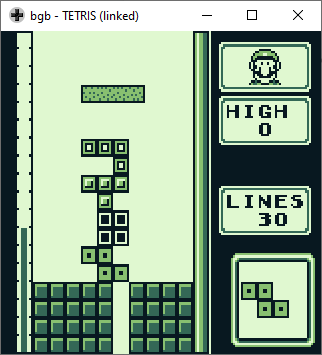
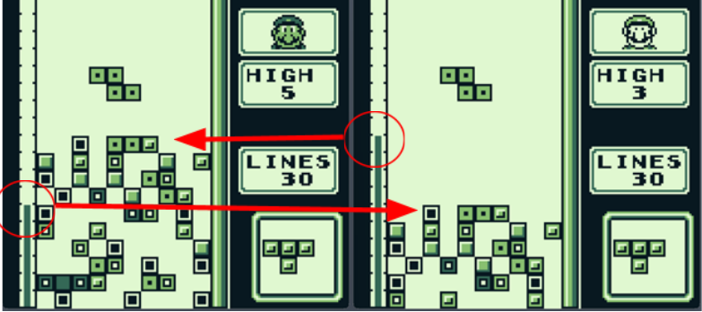

Introduction
Once you find yourself in a situation where you and your friend have Game Boys in your hands, and are just about to start an epic match of Game Boy Tetris, you probably wish that you had read this document before the match1! What is about to follow is that the next chapter is a very short introduction to the basics of the Game Boy 2-player game. Most of the topics presented there are further elaborated within the following chapters. Some topics are very, very technical and may not be of any help in any of your epic matches but rather in your epic projects relating to Game Boy Tetris. Whatever your ambitions, thank you for reading and let’s hope the contents suit your needs!
2-Player Game Boy Tetris in a Nutshell
When two Game Boys are connected with a link cable and both devices run the original Tetris game, the otherwise inaccessible 2-player mode becomes accessible. To enter the mode, both players have to be on the player selection screen. One of the players chooses the 2-player mode which is then enabled also on the second Game Boy.
The player who starts the 2-player option becomes the game host. The host will be shown as Mario, and the other player will be depicted as Luigi on both devices. Many actions, such as starting a game or selecting the game music, can only be performed by Mario. Luigi’s inputs are dormant during these times. Other options, such as choosing the height, can be made by both players separately. And, of course, the actual game play on both devices is independent of each other, and neither Mario or Luigi has any advantage or disadvantage from being the host (unless Mario starts a game before Luigi is ready).

1 Maybe this scenario is at the CTEC, i.e. in the Classic Tetris European Championship, where you’re competing for the Game Boy Tetris Championship title?
Game Basics
Game Boy Tetris 2-player matches are played as best-of-seven (BO7) – The first to win 4 games wins the match. During each game, both players are dealt the same piece sequence which makes the matches a bit more equal as opposed to both having different piece sets. Also, as will be elaborated further later in this document, advanced players can use the knowledge of the piece sequences as an advantage in their game tactics.
The only available play speed in the 2-player mode is the level 1 speed. At this speed, without pushing the D-Pad down to temporarily accelerate the fall speed, the current piece drops very slowly. Which means that pushdowns become a necessity for this mode since the game can either be won by clearing 30 lines faster than your opponent, or when the opponent tops out2. A player can speed up the opponent’s topping out by sending garbage rows3, which typically occurs when the player clears more than one line at a time. A 2-player game is actually often a speed competition!
Whether a player has won or lost is shown on the winner/loser screen after each game. While the winner jumps up and down, the loser cries. The winner’s Game Boy displays both players from the front and the loser sees them from the back. After a match is won, the loser goes out and disappears with an explosion…or in a pile of tears, depending how you interpret the animation. The winner and the character’s name can be seen on both screens. Depending on the outcome, only one player is shown and it reads MARIO WON or LUIGI WON on both screens. After a while the screen forwards back to the height selection screen from where a new game can be started.


2 Note that both events force an end of the game: “I win → you lose” and “I lose → you win” except for the rare occasion that both players either top out simultaneously or clear the 30th line simultaneously—A draw is possible but extremely rare in a real match.
3 See further explanation and discussion about garbage rows in the following chapter, and in particular The Sent Garbage Stack and the Garbage Well
A peek under the hood
In this chapter we deepen the understanding of the game mechanics behind the Game Boy Tetris 2-player mode. Beyond this point there is a growing amount of technical content that may become difficult to understand for a casual reader. But don’t worry, most of the technicalities you don’t need to know on your road to becoming the next Game Boy Tetris Champion. If you’re here only for the 2-player mode tips and tricks, go ahead and jump right to the Well, what we learned from all the above and how can we use it for beating our opponents? Chapter!
Level speed(s)
Players cannot choose the speed of the game in the 2-player mode as opposed to the 1-player mode where it’s possible to choose the speed from lvl 0 to lvl 9 speeds4.
The only available play speed in the 2-player mode is 1. At this speed, without pushing the D-Pad down to temporarily accelerate the fall speed, the current piece drops one row every 49 frames, which is approximately a drop every ~0.85 seconds5. For a piece to drop down the full 18 rows6 from top to bottom may take almost 15 seconds. When the down arrow is held, the piece accelerates to one drop every third frame (1/3G), which is the level 20 speed – the fastest and final level in Game Boy Tetris 1-player mode. By pushing down the piece can be dropped from top to bottom in approximately ~0.9 seconds.
The higher the skill level of players in Game Boy Tetris 2-player mode, the more likely the game is to become a speed competition where the faster player often wins. Therefore pushing down pretty much every piece in a match is necessary.
Initial Garbage Stack (Height Selection aka Handicap)

Before the game starts, both players have the option to choose a height. This is sometimes also referred to as a handicap – you can choose a number from 0 to 5. The height determines how many rows of random garbage are placed on your playfield at the beginning of a game. The highest point of the initial garbage stack is twice the chosen height number – height 5 would create 10 rows of garbage and height 3 would give you garbage of a height equivalent to 6 vertically stacked minos7. The mino types and the placements are the same for both players. Even if the chosen heights are not the same for both players, the stacks contain the same garbage minos from top down with extra minos on the bottom of the higher stack.
Approximately 50% of the initial garbage stack consists of empty spaces, and the garbage can be cleared with completing rows. This type of garbage can also be called a B-Type stack or a Swiss cheese stack. Note that in the official Classic Tetris Championships (nationals or world wide) the garbage height has traditionally always been 0, i.e. no initial garbage is used in competition. However, in more casual competition settings the initial garbage stack can be used to level the inequality of the players, or just change the nature of the gameplay as the higher initial garbage stack usually results in earlier top outs.

4 In 1-player mode it’s also possible to activate the “heart mode” speeds which are lvl 10 to lvl 19 speeds by first pressing Down+Start on the title screen.
5 The Game Boy runs at 59.73 frames/second.
6 The Game Boy Tetris playfield is 10 columns wide and 18 rows high.
7 Minos are the squares of which each of the 7 tetris pieces (tetriminos) are constructed - a tetrimino consists of 4 individual minos.
The Sent Garbage Stack and the Garbage Well
Besides the initial garbage stack, there is another type of garbage which can be sent from one player to another. Sending lines can be achieved by clearing lines. A Tetris (full four lines clear with an I-piece) sends out the full four garbage lines to the opponent. Clearing three or two rows sends one less garbage line than what was cleared, i.e. two garbage lines for three cleared lines and only one garbage line for two cleared lines.
| Line Clear Type | Cleared #Lines | Sent #Lines |
|---|---|---|
| Single | 1 | 0 |
| Double | 2 | 1 |
| Triple | 3 | 2 |
| Tetris | 4 | 4 |
The garbage sent by the opponent is not immediately received. The receive happens only after the receiving player’s current piece locks to either their playfield floor or to the top of their stack. In case the opponent clears lines with consecutive pieces before the opponent’s piece locks, the garbage is received one batch at a time – that is one batch per locked piece. This way the most garbage rows a player can receive at any one time is four rows sent through a Tetris, but the player may receive a maximum of 12 lines8 in 3 consecutive batches.
The garbage rows are sent to the bottom of the opponent’s stack. The garbage rows are completely filled with minos except for one single column, which is left open. This gap is called the garbage well. The column at which this well is placed remains the same for a game, and is at the same column for both players. Note that this well appears only on even columns, namely columns 2, 4, 6, 8 or 10.
Knowing in which column the garbage well appears is crucial for a lot of competitive tactics which will be discussed further in a later chapter. It is impossible for a player to know in advance which column the garbage well will appear exactly. You just have to wait until your opponent sends the first garbage or, if possible, send garbage to your opponent and peek from their screen the place of the garbage well.

8 In 2-player Game Boy Tetris it is possible to get 3 I-pieces in a row, but it is extremely unlikely!
Opponent’s height bar
There’s one very peculiar aspect in Game Boy Tetris 2-player mode: the opponent’s height bar on the left side of a player’s screen. The bar indicates how high the highest point in the opponent's stack is. Of course, you can’t know whether it’s a narrow spire of pieces rising high in the playfield, or if the whole stack being up high (and the opponent maybe being in serious trouble). But the height bar can be used as an indication of how the other player is playing, as the height bar shows also the line clears – if the height bar drops down, you’ll know that there’s garbage coming as soon as your current piece locks to your playfield! Also note that the changes in the opponent’s height bar are always immediate, unlike the appearance of the sent garbage to the bottom of your playfield.

Line clear animations
The pauses caused by line clear animations in Game Boy Tetris are very long. Since 2-player Tetris is one part a survival mode, and another part a speedrun mode, understanding how much different combinations of line clears take time is important. Below are some simple calculations regarding the line clear delays and how they add up.
| Line clear | Clear time9 [s] | Clear time [s] per 4 lines |
|---|---|---|
| Single | ~1.56 | ~6.23 |
| Double | ~1.56 | ~3.11 |
| Triple | ~1.56 | ~3.1110 |
| Tetris | ~1.56 | ~1.56 |
As one of the winning conditions of the 2-player mode is clearing 30 lines, it’s useful to know how much time it would take with using only one type of clear. Note that in practice the 30 line clears are achieved by a combination of different line clears, and with received garbage lines it’s unlikely to achieve it with only singles. Also note that the clear time per 30 lines does not equal a full game time since stacking takes also time.
| Line clear | Clear time [s] | Clear time [s] per 30 lines | Diff. to prev. [s] | Needed to complete 30 [s] |
|---|---|---|---|---|
| Single | ~1.56 | ~46.71 | 23.35 | 30 |
| Double | ~1.56 | ~23.36 | 7.79 | 15 |
| Triple | ~1.56 | ~15.57 | 3.11 | 10 |
| Tetris | ~1.56 | ~12.46 | 0 | 8 (7.5) |
From Diff. to prev. (time difference to previous line) column in the above table it’s easy to see that making singles is very, very inefficient from a time perspective. With doubles the 30 lines can be achieved in approximately half the time compared to singles, and in a little less than double the time that only with tetrises. Triples are almost as efficient as Tetrises, due to the fact that you’ll kind of need one extra tetris to complete the 30 lines – with the 8th tetris it’s actually 32 lines completed whereas with all the other line clears you’ll get the exact 30 lines.
9 The line clear time used in these calculations is 93 frames which includes 2 frames of ARE, i.e. the delay of how long a new piece is on top of the screen until it can be moved.
10 Technically one could argue that clearing the 4 lines with two triples equals one full line clear and one third of the second line clear, i.e. ~2,08 sec. but in practice the player has to wait for the full two line clear delays anyway.
Well, what we learned from all the above and how can we use it for beating our opponents?
In this chapter there are discussions about some Game Boy Tetris 2-player mode strategies and tactics, and how to apply into practise the info presented in the previous chapter. These tips are gathered from the CTEC Game Boy Tetris players over the years, and therefore probably represent a fairly high level of practical knowledge of the game. However, to become a champion, you may need more than this document has to offer, and therefore it is highly encouraged to actually play the game rather than just reading about it 🙂
Speed is the key!
The “speedrun” nature of the Game Boy Tetris 2-player mode requires the players to play as fast as possible. One of the ways to achieve this is simply by pushing the D-Pad down to make the pieces fall faster. Although, rushing too fast is not good if you start misdropping – you also need to keep your stack clean. In general, it’s better to stack cleanly than fast, but the faster you can stack cleanly, the better your chances at winning!
As the stack rises, it’s fairly obvious that the time for a piece to fall from the top of the playfield to the top of the stack diminishes – this can be used as a game tactic to gain advantage over your opponent. However, a higher stack may cause higher risk of topping out, especially if the opponent sends considerable amounts of additional garbage lines. Therefore keeping the stack at an optimal height and at the same time accommodating quick downstacking if need be is an art to be learned for every champion.
Another very notable time consuming aspect of the Game Boy Tetris 2-player mode is the line clears. As discussed earlier in this document, minimising the time loss from line clears means scoring mostly tetrises but which can be almost impossible during a fast paced match. Going for the 30 lines win clearing additional triples is still a viable tactic, but unnecessary doubles and singles should be avoided. However, a simple study made from the CTEC 2018 and 2019 Game Boy Tetris championships showed that as long as the player makes quick decisions and drops the pieces as fast as possible, the line clears are not the decisive factor in winning/losing a game.
The best ways to save time:
- Push down the pieces!
- Decide fast
- Stack clean
- Optimise stack height (minimise drop time, avoid topping out)
- Optimise line clears (favour tetrises and occasional triples, but stay alive with doubles and singles)
Match strategies and game tactics for a 2-player match
A simple match strategy and game tactic11 is to just play as fast and clean as you can against any opponent that comes your way. That’s probably how the vast majority of players do. And even if they have some specific match strategies and game tactics for different situations, they may not think about them consciously but rather just adjust their play according to gut feelings. However, here are some tips for actually thinking about your strategies and tactics on the basis of how you play, and how your opponent plays.
Each game in a match can be separated into three main phases: opening, main game and ending. Opening tactics will be discussed on the following page, and the main game consists mostly of keeping the chosen stack type as playable as possible while not topping out. The end game is probably the one that has some of the most interesting problems and solutions, which will be shortly discussed further down in this document. In any case, the first thing to ask yourself before a game starts: who is your opponent, and is it better to get rushing for the 30 lines first, or trying to send so much garbage that the opponent tops out, and what to do to achieve those goals?
Know your opponent - what kind of attack/defence works best for different scenarios. Beating an equal or a little bit better opponent may require some extra risks - keeping an extra high stack, dropping full speed tucks and spins, trying to guess the place for the garbage well etc. Also, a well timed garbage attack may lead to a win, or at least pave the way towards the end game for your advantage.
Being a new player in a competition and the community is always an interesting position. If you are actually a good player that nobody else knows, you’ll definitely have the advantage of surprise against any opponent, even the more experienced ones. And if you already are an experienced player facing a new/unknown player, it may be difficult to anticipate how to approach the match. Either way, never underestimate your opponent, and give the game all you got from the start!
A very big part of the competition is just psychology. It’s always an advantage to gain a bit of reputation with good matches, regardless of being a new or a seasoned veteran - if the next opponent has any kind of fear or uncertainty towards you, you’ll have the high ground. On the other hand, if you’ve been on a losing streak or somehow the clear underdog in the match, it’s always a perfect time for a surprise attack for an opponent who overlooks their chances over you. In any case, always remember that anything can happen in a tournament setting, so remember that the match ain’t over until the 4 consecutive heads are on the screen. Keeping your head cool and playing solid games against an arrogant player may very well turn the tables quickly in your favour! Also note that as the 2-player games are often solved within millisecond marginals, the player that has less hesitation within them is often bound to win the matches.
11 A match consists of a minimum of 4 and a maximum of 7 individual games. A strategy is formed for the whole match and tactics are used in individual games.
Opening tactics
There are some things to consider about how to begin a 2-player game. If the first piece is any other than S or Z, you can start stacking immediately according to your match strategy. There are two pretty obvious main game tactics, namely stacking high for clearing tetrises/sending a lot of garbage to the opponent, and stacking low for keeping it safe for receiving the garbage and for waiting to see where the garbage well comes. Let’s first look at the pros and cons of these two tactics, and after that quickly look at what to do with the notorious S and Z starts.
High stack
A quickly built high stack in the beginning may give you an advantage over the piece sequence – you get the crucial longbars before your opponent, especially if they waste time on clearing singles and doubles on their way. As mentioned before, the pieces need shorter time to fall to the top of a high stack which also takes you further within the piece sequence.
Building a (clean) high stack and waiting for the right long bar also means that you can withhold the position of the garbage well from your opponent longer. However, there lies also the highest risk in building a high stack in the beginning – a huge amount of minos over the upcoming garbage well will turn out to be a huge amount of lines to clear before you can efficiently downstack with the garbage well. And, of course, that may very well end your game with an early top out. So choose carefully the position of your well in the high stack (only one of the even columns where the garbage well will appear), and be prepared for the possible upcoming garbage lines.
Low stack
As the position of the garbage well is pretty crucial in a 2-player game, a low stack helps to clear the way to the garbage well when the first garbage comes. If your opponent prefers a high stack and manages to send a huge amount of garbage to you, the low stack provides relative safety against such a situation. Gaining access to the garbage well early on in the game is often one of the most important pivot points in the game. Also, even if you fall behind in the piece sequence, you may use it as an advantage by deducting when the I-pieces arrive from the garbage you opponent sends you.
However, if you maintain the low stack only with singles, you may end up losing a significant amount of time compared to your opponent. Also clearing doubles takes time, and gives away the position of the garbage well to your opponent early on with a pretty insignificant amount of garbage lines sent, which may backfire especially if the opponent gets their garbage well open quickly. So, for a winning low stack tactic it may be most beneficial to build a relatively flat stack and clear triples and Tetrises as fast as the lines are filled.
S/Z start
Well, yeah, S/Z are definitely the most annoying pieces to start pretty much any (classic) game of Tetris. You’ll have either a hole or a tuck setup right from the beginning, and clearing either may take away precious fragments of seconds that could turn out to be the decisive fragments between winning and losing a 2-player game. The only comfort is that your opponent has exactly the same problem, and therefore it’s extremely valuable to have some efficient tools for solving the situation – the absolute worst thing would be to stop playing and start thinking of solutions, so here are some suggestions to consider beforehand!
Make it a tuck setup. It’s probably the easiest way to solve the annoying start. However, it’s difficult to push down the tuck piece to the exact height to complete the tuck, and you may either end up waiting for the piece to fall on its own, which takes a huge amount of time, and even then you may end up with a misdrop that causes even more trouble. Therefore it might be a better solution to build a roof burn, i.e. position the S or Z flat at the bottom of the playfield and try to complete the second row of the stack with the upcoming pieces. This way you may get quickly rid of the hole/tuck setup with pieces you can drop as fast as you can (practically no time lost), and continue stacking according to your strategy. However, there’s a high risk that you don’t get the exact suitable pieces to complete the row, which, in turn, may cause more various crappy scenarios. Also, even if you succeed in completing the roof burn, depending on the pieces you made it with, you may end up with an annoyingly irregular start for your following stack. In any case, the tuck setup is usually the safer but slower way, and the roof burn is the high risk/high gain way – choose wisely!
Some concluding words for starting tactics
Considering the pros and cons in both high stack and low stack, it’s pretty impossible to say exactly what is the optimal stack height for a game start, and when is the optimal time to start sending garbage, i.e. reveal the position of the garbage well to your opponent. But somehow the top players seem to know how to play efficiently from the split second when the first piece appears on their playfield… Also, as mentioned before, speed and making quick decisions helps - a lot! Train an experiment with both variants, and maybe even find your own tactics that fit best for your style.
Stacking tactics during gameplay
There are a lot of basic stacking tutorials online. It’s probably a good idea to try to find specifically Game Boy Tetris and NES Tetris tutorials since they’re the most relevant and readily available. However, note that in Game Boy Tetris 2-player mode you’ll be mostly building centre wells, which requires a little bit different than just basic 1st or 10th column well12 builds. The most important thing is in any case to keep your well and burning options open!
Usually the 1-player NES and GB instructions describe how to burn efficiently as few lines as possible. However, in the GB Tetris 2-player mode it is actually best to build the burning options with triples in mind. If you have a hard time getting the I-pieces, it’s still very, very useful to keep the stack in check and garbage lines flying to your opponent with L’s and J’s, as that will also count relatively efficiently towards your 30 lines.
Also note that most of the things said about high and low stacks in Opening tactics are relevant also during the rest of the game. A high stack keeps you ahead in the current piece sequence of the game, and you’ll have a high tetris well at all times (assuming no misdrops), but you’ll be vulnerable to topping out. A low stack keeps you safer but may be slower to maintain. In any case, turning the garbage well efficiently to a part of your stack and using it to your advantage is probably the most important thing in the bulk of the Game Boy Tetris 2-player game(s).
12 1st column as in GB Tetris 1-player mode, and 10th column as in NES Tetris.
The end game
The end game basically means getting the last few lines to complete the 30 lines. In competitive play it is surprisingly common that even the top players concentrate so much in their stacking that they forget to keep an eye on the line count. A game is easily lost when only one or two lines are needed, but the player keeps stacking for a Tetris. Also, a flat stack with no burning options is a deadly combination in the end game since it may prove to be very time consuming to get even the two lines burn option when you most need it. Therefore, try to start preparing for the end a little bit in advance so that you can get the win with any piece(s) and not just the I-piece.
One of the very advanced tactics in 2-player mode is to notice that the most efficient line clears towards the end may not be the ones made with an I-piece to the bottom of the open garbage well. In a game of milliseconds, it takes a lot of time to drop the I-piece all the way down the full 18 rows. Instead, it might be a lot more efficient to maintain a V-shaped stack and a double well in which you can quickly burn the last lines high up with L/J (triple) or any of the other pieces that would end up to a double or even a single.
Also, you could consider getting the very last lines somewhere completely other (higher) than your usual well or burning position. Building a roof burn in a similar manner to the S/Z opening tactic to the top of the stack could prove to save you the precious milliseconds. Though, if you know your opponent is struggling and most likely not sending significant amounts of garbage, you could even play a good part of your game as a sort of speedrun game at the very top of your playfield. To have a better understanding and maybe even practise this, it is highly encouraged to play the custom 40 lines sprint mode, available after the CTEC 2023. Ask the specifics how to obtain this game mode in the GBTetris discord or the CTEC Discord!
Another possible situation in the end game, or which can create an end game, is that you build such a stack which you can use to send a lot of garbage in quick succession. The obvious solution would be to drop a lot of I-pieces in succession to a deep well, but even if I-pieces are not readily available, try clearing two or more triples to get your opponent to a more difficult situation or even to top out. An important thing is to check the opponent’s height bar on the left side of your screen so that you might time your attack to a moment when the opponent is already at least more than halfway high on their playfield. A garbage attack to a low playfield might end up backfiring if the opponent has their garbage well open, or even to a situation where you’ve provided your opponent with the line clear options with which they’ll get their 30 lines completed. In any case, remember that clearing singles does not do pretty much anything to help your opponent to top out!
Some random bits of information and things to remember
Use column 1 as the emergency storage shed, as there won't be a garbage well beneath it in any circumstances. Almost in all situations at least one of the sides of your stack can be used to throw unwanted pieces, and if the side is already higher than the rest of your stack, it’s quicker to stack them to an already high pile. As long as the high pile is not interfering with the appearance of new pieces, you don’t need to worry about the spire going up the playfield and the screen.
Follow your opponent’s stack height from the left side of your own screen at all times. You can use it to time your own line clears/garbage sends, as well as preparing for obtaining the opponents garbage (you’ll see the opponent’s height drop in many cases before the garbage is coming).
Moving pieces quickly and efficiently to the sides is almost as important as dropping them down fast. For a tournament champion, it might be an inevitable trait to learn to tap the LEFT/RIGHT D-pad very, very quickly! But also drop the pieces as quickly as possible, and that might require that the pieces are not dropped to the very bottom of the screen.
Finally, some nice words about online GB Tetris competitions, CTEC and national GB Tetris competitions
If you have read everything in this document from the beginning to this point, you are ready for a proper introduction to some serious Game Boy Tetris 2-player competitions. Although note that the Game Boy Tetris communities between the 2-player and 1-player modes are pretty much the same, so there’s always some love for the 1-player mode too!
- CTEC (Classic Tetris European Championship, Copenhagen, Denmark) has held 2-player mode GB Tetris competition since 2015, excluding two corona years 2020 and 2021 (see the Player Index at classictetris.eu)
- Since -JJ won the CTEC GB tournament in 2017, a GB tournament was included in the Finnish national championships in 2018 and 2019 (there were no CTFC’s during corona years, and even though CTFC 2022 and 2025 were a live tournaments, there were only NES tournaments)
- In 2023 and onwards CTUK championship has had Game Boy Tetris tournaments, in which the 30/40 lines sprint mode was first used as the qualifying method. In retrospect, it clearly anticipated the success of the improved qualifying method at the following CTEC’s!
- As it’s a bit difficult to play the GB Tetris 2-player mode online (not impossible though!), it is convenient to be a part of the larger GB Tetris communities that play 1-player mode either mainly, or in addition to the 2-player mode. Such communities can be found, for example, from the GBTetris discord. Welcome!
Appendix 1 - Jargon
| ARE | The “entry delay” of how long a new piece (tetrimino) is on top of the screen until it can be moved. Game Boy Tetris ARE is 2 frames, i.e. approximately 0.033 seconds. |
|---|---|
| BO7, best-of-7 | Game Boy Tetris match consists of a maximum of 7 games, of which you need to win 4 to win the match |
| Downstack | How you (efficiently) lower the height of your tetris stack. Downstacking often involves line burns |
| Framerate | Framerate describes how many times per second a screen is updated with new images. Original Game Boy framerate is 59.73 frames per second |
| G | “Drop per frame”. For example, a drop speed of 1/3G means that a piece falls one row every 3 frames, and with the Game Boy framerate the 1/3G is approximately one drop every 0.05 seconds. |
| Garbage well | One column wide gap in the garbage stack that consists of the minos your opponent sends you in a 2-player game. Garbage well can appear only in columns 2, 4, 6, 8 or 10, of which 4 and 6 are slightly more likely than the others |
| Line burns | Any other line clear than the full 4-line Tetris is usually considered a line burn. In 1-player mode you want to make only Tetrises, which give you most points in the game, hence anything else is “burning lines” |
| Line clear animation | Line clear animation in Game Boy Tetris is always ~1.56 seconds (93 frames) |
| Match/Game | A match is a whole Game Boy Tetris 2-player BO7 match, which consists of a maximum of 7 games (not counting possible draws) |
| Mino | Minos are the squares of which each of the 7 tetris pieces are constructed (see tetrimino) |
| Tetrimino | A tetrimino consists of 4 individual minos (see mino) |
| Playfield | The Game Boy Tetris playfield is 10 columns wide and 18 rows high (the standard Tetris playfield is 10 columns wide and 20 rows high) |
| Heart-mode | In Game Boy Tetris 1-player mode it’s also possible to activate the “heart mode” speeds which are lvl 10 to lvl 19 speeds by first pressing Down+Start on the title screen |
Appendix 2 - Editorial notes
| Date | Notes | Authors |
|---|---|---|
| 03/2026 | Final final edits before actually publishing this time | -JJ |
| 12/2023 | Published on GB Tetris discord and CTEC discord…but actually not | |
| 12/2023 | Final comments and edits | Tolstoj, -JJ and Pascal |
| 12/2023 |
Something to add in the future:
|
Pascal, -JJ |
| 11/2023 | First edit towards publishing. Only the more approachable game play part included, the extremely technical part left out for now | With extensive editorial commentary by Pascal |
| Summer/autumn 2023 | Initial text | -JJ and tolstoj |
Tetris© and ® is a trademark of the Tetris Company and Tetris Holding.